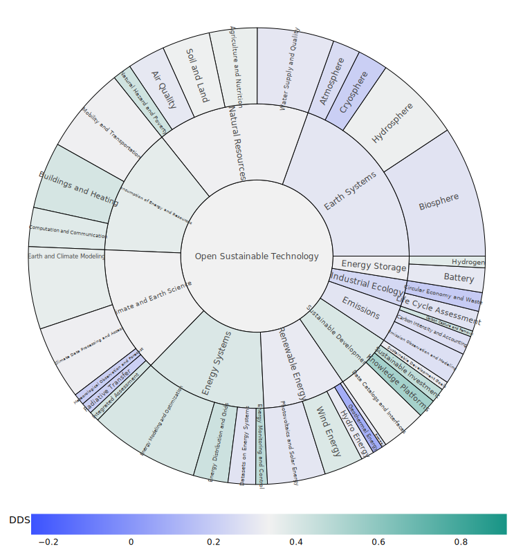
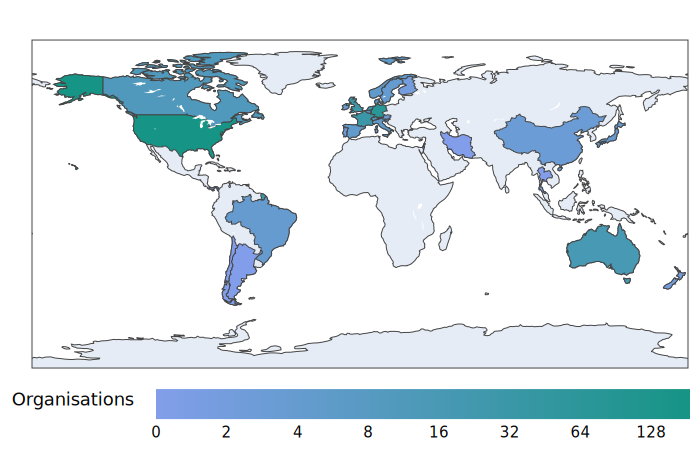

The Open Source Sustainability Ecosystem - Report Release 2023¶
Tobias Augspurger · Eirini Malliaraki · Josh Hopkins · January 11, 2023
Opensustain.tech has recently published a study providing the first analysis of the health and vibrancy of open source software in sustainability and climate technology. Read the extended website version of the PDF version
Open source culture has demonstrated how transparent and collaborative innovation can support modern digital services, data, and infrastructure. Yet, despite its transformative impact and use within an estimated 97% of digital products, the potential of open source for developing environmentally sustainable technologies is not well understood.
Open source software (OSS) accelerates the transition to a sustainable economy by supporting traceable decision-making, building capacity for localization and customization of climate technologies, and most importantly, helping to prevent greenwashing. This transition requires technological innovation and new opportunities for society to participate in developing and adopting technologies.
Opensustain.tech has recently published a study providing the first analysis of the health and vibrancy of OSS in sustainability and climate technology. The analysis covered multiple dimensions, including technical, social, and organizational. The report also highlights key risks and challenges for users, developers, and decision-makers, as well as opportunities for more systemic collaboration.
For the past two years, more than one thousand actively developed open source projects and organizations were collected and systematically analyzed using qualitative and quantitative methods as part of the Open Sustainable Technology project and the associated database.
Community engagement¶
Opensustain.tech found 996 active project repositories on GitHub that had at least one commit or a closed issue in the last year. Although stars are not a perfect metric, we counted 127,038 stars across these projects. Still, a search on GitHub revealed 27 projects have more stars than the entire software in environmental sustainability combined! This is one indicator that open source still plays a minor role as a long-term transformation strategy in sustainability compared to other domains.
Topic¶
Additionally, half of all identified projects are in data-rich fields such as climate science, biosphere, energy system modeling, transportation, and buildings. Other topics, such as carbon offsets, battery technology, sustainable investment, emission observation, and integrated assessment modeling, show few notable developments. Based on popularity growth, opensustain.tech also identified newly emerging topics, such as green software. Moreover, most identified projects are relatively young, with a median age of 4.45 years.

Programming language¶
The analysis of the number and use of programming languages provided further insight into the coding skills required and the nature of the projects. For example, opensustain.tech found Python dominated the OSS movement for sustainability, and is used in 39.8% of all projects, followed by R (16.7%), and lastly Jupyter notebooks (9.34%). This indicates a strong focus on analyzing large datasets, where Python and Jupyter Notebooks are increasingly dominant and less focused on web applications.

License¶
The use of various licenses revealed potential intellectual property issues related to the use of software packages as well as the general openness of the projects. Opensustain.tech found permissive licenses like BSD, Apache and MIT are the most popular in sustainability. The MIT license was the top choice, used in 26% of the projects, followed by the copyleft license GPLv3 (17.3% of all projects).
Project size¶
Analysis of knowledge, work, and project governance distribution revealed small, open source communities lead most of the development. On average, open source software projects rely heavily on a single developer responsible for approximately 70% of the contributions to a project. This indicates a higher contributor risk, which may jeopardize the future of many of these projects.
Geography¶
Most OSS projects (64%) are based in Europe and North America, with a small number of projects from the Global South. Despite having more GitHub users than Europe, Asia accounts for only 1.9% of organizations working in OSS for sustainability.

Recommendations¶
Based on this analysis, opensustain.tech proposes recommendations for those interested in supporting open source software in environmental sustainability more effectively through community building, policy development, and future investment.
- Collaboration: strengthen the interconnectivity of the identified open source communities and connecting projects to local use cases is paramount for the long-term impact and stability of the ecosystem. It's also key to adapt and extend existing open source projects for underrepresented countries in the Global South.
- Funding: further support is required in the form of an open earth intelligence incubator and other support programs for open source software in environmental sustainability, as well as ongoing, dedicated funds for development and maintenance.
- Technical: the OSS community of users and developers should develop better technical interfaces between platforms, data, models, and open-source tools across and within sectors to “stop reinventing the wheel”, and standardize environmental data exchange across different levels of government.
- Advocacy: close the knowledge gap on the environmental impact of companies through open source principles and transforming financial institutions through transparent and scientific decision-making for sustainable investments.
Digital and sustainable transformation must converge as a digital public good if we are to achieve agreed environmental goals and create a safe and equitable corridor for people and the planet. Open sustainability principles can help governments, research institutes, nongovernmental organizations, and businesses move quickly toward science-based decarbonization and conservation of natural resources and ecosystems by providing critical transparency, traceable decision-making, and collaboration on innovation.
Everyone is invited to participate in future studies of this type. By contributing to opensustain.tech in any way, you help us build future reports. Most importantly, you join us in promoting and encouraging open sustainable technology.